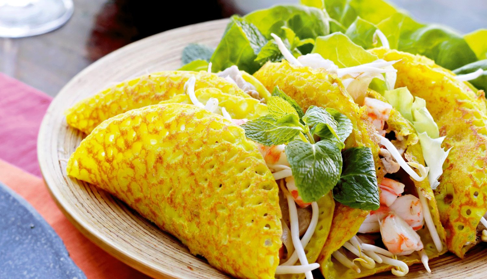
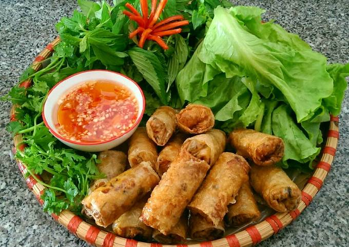
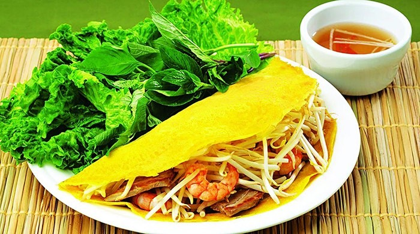
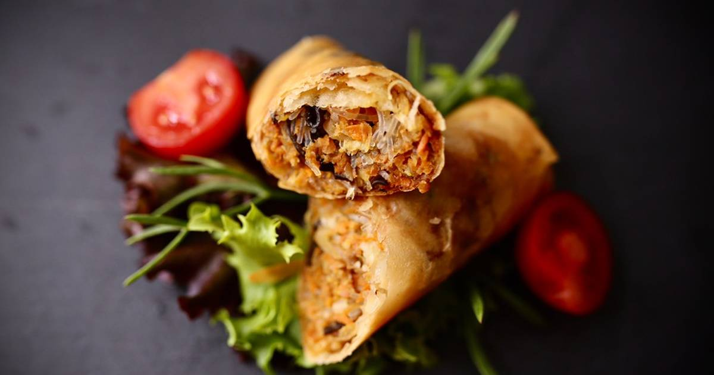

- ベトナムはどんな国
- 料理を紹介します。
- バインセオ (Banh Xeo) 
- チャーぞー (Cha Gio) 
ベトナム(Vietname)は東南アジアのインドネシア半島の東側に存在する国です。 首都はハノイです。一番大きい都市はホーチミン市です。母国語はベトナム語です。
地方によって味が違います。秋部は塩っぱい味、南部は甘い味です。
南部の名物です。2011年にCNNチャンネルに選ばれた ”世界で最もおいしい料理トップ50” の一つです。2012にアジア料理記録ブックに名前を書かれました。
